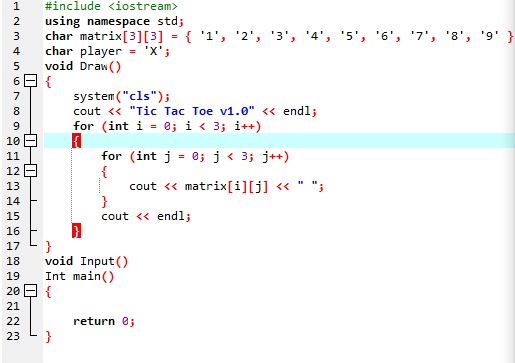
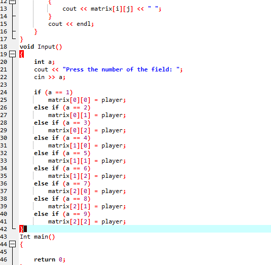
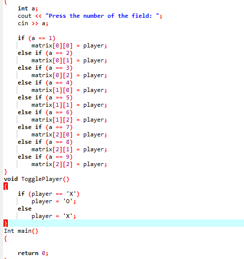
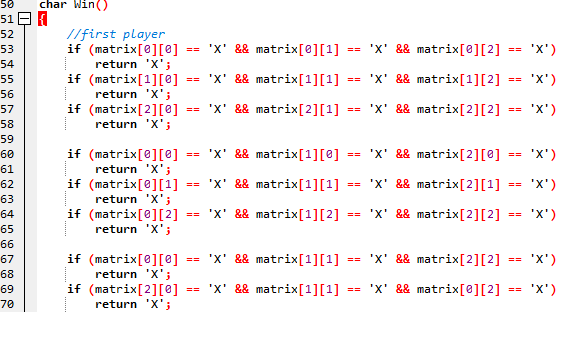
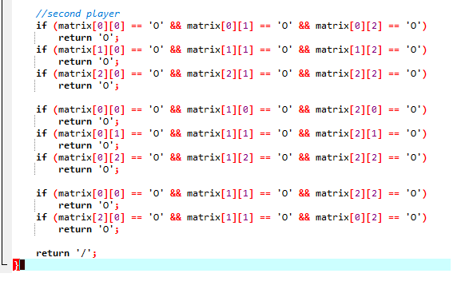
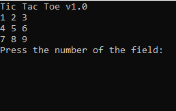
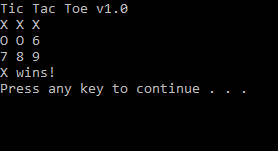

<!DOCTYPE html>

<html lang="en" xmlns="http://www.w3.org/1999/xhtml">
<head>
    <meta charset="utf-8" />
    <title></title>
</head>
<body>

</body>

</html>
<h1 align="center">Seminarksa naloga</h1>
<p align="center">
    V tej <i><b>spletni strani</b></i> vam bom opisal
    kako sem naredil križec krožecc

</p>
<br>
<h2 align="center">Kako sem jo naredil po postopkih oz. kodah po katerih sem delal</h2
<body>
    <p align="left"> SLika 1 : Osnovna koda
       </p>

    
</body>
<body
<br /><p align="left">Slika 1 </p>

    </body>
<body
      <br /><p align="left">slika 2 </p>
    
</body>
<body>
    <p align="left"> slika 3</p>
    
<body>
    <p align="left"> slika 4</p>
    
<body>
    <p align="left"> slika 5</p>
    
<body>
    <p align"left"> slika 6 : predstavlja odprto igrico</p>
    
<body>
    <p align="left"> slika 7 : predstavlja zmago</p>
    
<p align left="left"> Upam da vam bo ta moja skromna seminarska všeč.</p>
  
         
         

    